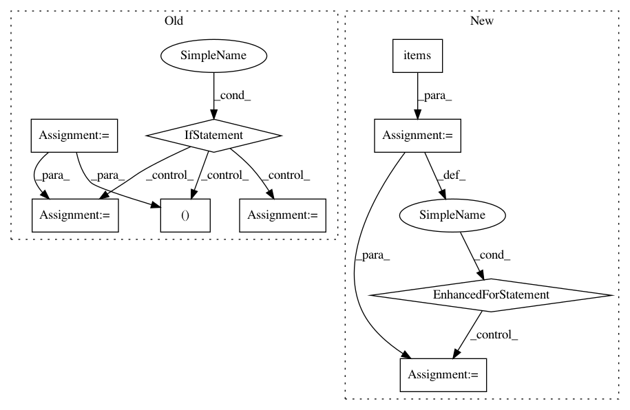

abbfdc5b04ec1824e42cebb472626d234ff7bd36,scripts/speaker_embedding.py,,tune,#Any#Any#Any#Any#Any#,262
Before Change
break
nb_epoch += 1
min_duration = None
duration = os.path.basename(train_dir)
if "-" in duration:
min_duration, duration = duration.split("-")
min_duration = float(min_duration)
duration = float(duration)
config_dir = os.path.dirname(os.path.dirname(os.path.dirname(train_dir)))
config_yml = config_dir + "/config.yml"
After Change
config = yaml.load(fp)
// -- PREPROCESSORS --
for key, preprocessor in config.get("preprocessors", {}).items():
preprocessor_name = preprocessor["name"]
preprocessor_params = preprocessor.get("params", {})
preprocessors = __import__("pyannote.audio.preprocessors",
fromlist=[preprocessor_name])
Preprocessor = getattr(preprocessors, preprocessor_name)
protocol.preprocessors[key] = Preprocessor(**preprocessor_params)
// -- FEATURE EXTRACTION --
feature_extraction_name = config["feature_extraction"]["name"]
features = __import__("pyannote.audio.features",
fromlist=[feature_extraction_name])
FeatureExtraction = getattr(features, feature_extraction_name)
In pattern: SUPERPATTERN
Frequency: 3
Non-data size: 9
Instances
Project Name: pyannote/pyannote-audio
Commit Name: abbfdc5b04ec1824e42cebb472626d234ff7bd36
Time: 2017-01-09
Author: bredin@limsi.fr
File Name: scripts/speaker_embedding.py
Class Name:
Method Name: tune
Project Name: pyannote/pyannote-audio
Commit Name: abbfdc5b04ec1824e42cebb472626d234ff7bd36
Time: 2017-01-09
Author: bredin@limsi.fr
File Name: scripts/speaker_embedding.py
Class Name:
Method Name: test
Project Name: Microsoft/nni
Commit Name: 10d7ece1c34c5533262a54d20d974a3d04f0b7ce
Time: 2020-09-15
Author: 40699903+liuzhe-lz@users.noreply.github.com
File Name: src/sdk/pynni/nni/compression/tensorflow/compressor.py
Class Name:
Method Name: _instrument_model